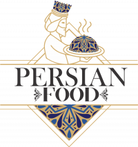
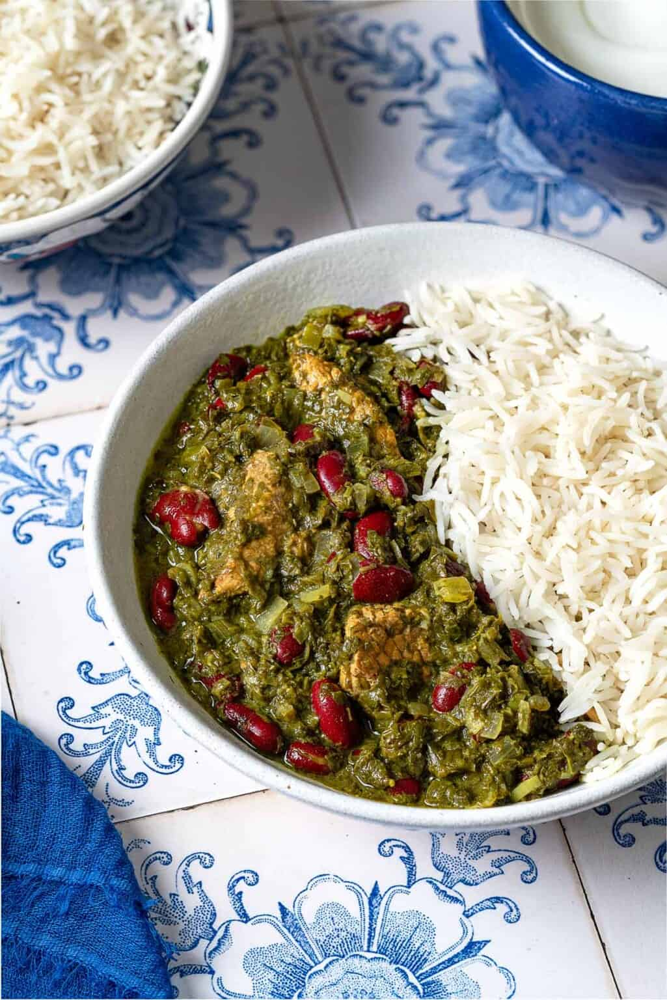

Ghormeh Sabzi is one of the most iconic dishes in Iranian cuisine, cherished for its rich and complex flavors. This savory stew, often considered a cornerstone of Persian gastronomy, is made with fresh herbs (such as parsley, cilantro, and fenugreek), slowly simmered with red beans, chunks of meat (usually beef or lamb), and dried limes known as limoo amani. These limes add a characteristic tangy flavor to the dish. The slow cooking process allows the aromas to fully develop, offering a perfect harmony between acidity, herbs, and spices.
Ghormeh Sabzi is traditionally served with fragrant basmati rice, often enhanced with saffron. This dish is more than just a meal: it reflects Iran's cultural and familial heritage, with its preparation often passed down through generations. Comforting and nourishing, it is frequently served on special occasions but also enjoyed as a daily meal, showcasing its importance in the hearts and homes of Iranians.